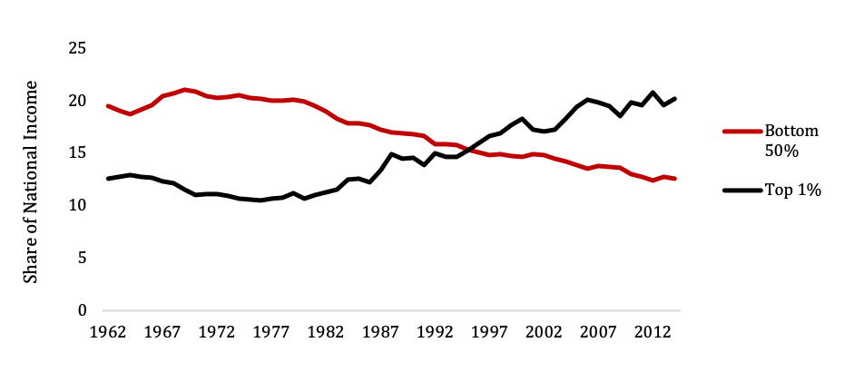
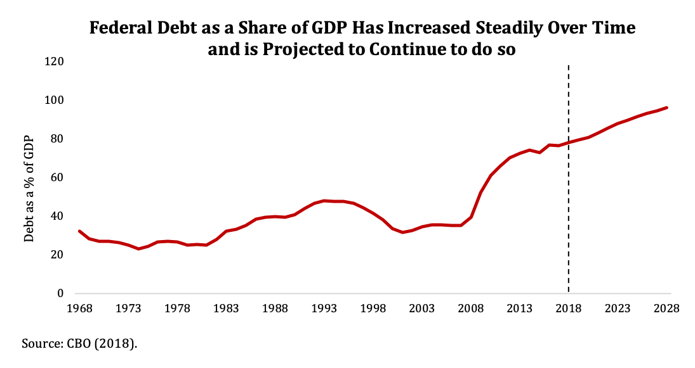

By: Hilary Gelfond
Home to 326 million people and the largest economy in the world (with a GDP of over $20 trillion in 2018), the economic outlook for the United States has a significant impact on that of the rest of the world.
Read below to learn about the size of the US government, the rising rate of federal debt, aggregate indicators of individual economic wellbeing and a summary of income inequality.
| Total Population | 327 million |
|---|---|
| Median Household Income | $57,652 |
| Poverty Rate | 12.3 percent |
| Share (25+) with a College Degree | 30.9 percent |
| Unemployment | 3.9 percent |
| GDP | $20.4 trillion |
| Inflation Rate(10-Year T Note Annual Avg.) | 3.0 percent |
Source: US Census Bureau (2019); US Bureau of Labor Statistics.
Absolute Economic Mobility
Absolute economic mobility, the likelihood that a child will earn more than their parents, is one measure of economic wellbeing. Economists Raj Chetty, David Grusky, Maximilian Hell, Nathaniel Hendren and Jimmy Nrang study how mobility in the United States has changed over time. They find that, on average, across the United States, absolute mobility has declined from about 90 percent for children born in 1940 to 50 percent for those born in 1980. That is, today's 30-40 year olds only have a 50 percent change of earning a higher income than their parents at the same age. See the chart below to compare your state to the national average.
As the share of income going to the top 1 percent has increased, the share going to the bottom 50 percent has declined.
Source: Thomas Picketty, Emmanuel Saez and Gabriel Zucman (2018).
The federal government is primarily funded through individual income taxes, payroll taxes and corporate taxes. In 2018, federal revenue totaled 16.6 percent of GDP.
Federal spending is composed of mandatory spending, which is written into law, and discretionary spending, which must be re-appropriated each year. Mandatory spending funds some of the largest government programs: Social Security, Medicare and Medicaid. Defense spending is part of the discretionary budget. Non-defense discretionary spending includes all other functions of government you may be familiar with. Federal spending totaled 20.6 percent of GDP in 2018.
Notice that federal spending exceeded federal revenues - the excent to which this occurs is called the deficit. In 2018, the federal deficit was 3.9 percent of GDP. The compounding of annual deficits and interest payments generates estimates of the federal debt.
Explore below to see the current composition of revenue and spending and the evolution of the federal debt.
